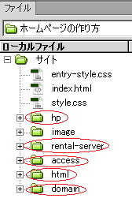
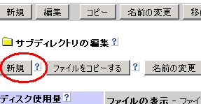

個別ページを作成してボリュームアップ
トップページ用のindex.htmlページを作成したら、そのテンプレートを元に個別ページも作成していきましょう。個別ページを作成する際は、そのページの内容によってカテゴリ分けをし、フォルダ分けをしながら作成することをおすすめします。
例えば、当サイトの場合はファイルの内容によって以下のようにカテゴリ分けをし、それぞれにフォルダを作成してその中に個別ページを作成しています。
- 作り方に関するページ → 「hp」フォルダ
- レンタルサーバー関連 → 「rental-server」フォルダ
- ドメイン関連 → 「domain」フォルダ
- アクセスアップの方法 → 「access」フォルダ
- htmlタグの一覧 → 「html」フォルダ
- 画像ファイル → 「image」フォルダ

同じ場所に全てのファイルを詰め込んでもごちゃごちゃしてわからなくなるので、ファイルの内容や種類によって仕訳けをし、入れ物を作ってまとめるという感じになります。
このフォルダ分けをするごとに階層が深くなっていきますが、一番上のフォルダ分けされていない場所はルートディレクトリと言われており、トップページ用のindex.htmlやrobots.txt、あるいはsitemap.xmlや.htaccessなどの重要なファイルを入れておく場所になります。
このルートディレクトリを基準にして、フォルダを作成していくごとに階層が深くなっていきます。ただ、ふたを空けても空けても中身の出てこない贈り物のように、無意味にフォルダ分けをするのは検索エンジン対策上は好ましくありません。
もし、全部で数ページ程度しかないホームページでしたら、あえてフォルダ分けをせず、ルートディレクトリに全てのページを作成し、フォルダ分けは画像用のフォルダをひとつ作るぐらいで対応するのがよいでしょう。
このフォルダ（サブディレクトリ）を作成する場合は、ジオシティーズの場合は以下のように新規のフォルダを作成します。ほかの無料ホームページでも、だいたいは同じように作成することができます。

フォルダ名は任意の英数小文字で作成してもよいですが、カテゴリ内容にあったものをつけるといいと思います。例えば、画像を入れるフォルダなら「image」とか「img」などといった感じです。
index.htmlファイルを使い、個別ページのhtmlファイルを作成
トップページ用に作成したindex.htmlページをコピペで複製しながら、それをテンプレートの雛形にし、個別ページをたくさん作成していきましよう。
まず、index.htmlページのhtmlソースをコピペしてから作成したフォルダへと移動し、新規ファイル（htmlファイル）の作成ボタンを押します。新規のhtmlファイルにコピペしたhtmlソースを貼り付け、それを修正しながら個別ページを作成するのが簡単です。
コピペしたhtmlソースはトップページのindex.htmlとまったく同じページなので、記事タイトルや文章、キーワードやページの説明文を個別ページ用に書き換えれば出来あがりです。
出来あがったら、ファイル名をindex.htmlではなく、任意の「英数小文字.html」にして保存しましょう。
ファイル名をindex.htmlのままで保存してしまうと、トップページ用のindex.htmlファイルが上書き保存されてしまいますのでご注意ください。
このファイル名を保存する際も関連するキーワードを使用して作成しましょう。例えば、ドメインについて書いたページなら、domain.htmlとかそんな感じになります。
個別ページのファイル名の付け方
個別ページでデザインが反映されない場合の対処方法
フォルダ分けをして個別ページを作成した場合、階層が一つ下に変わることにより、スタイルシートがリンク切れとなってしまい、デザインが反映されないことがあるかもしれません。
例えば、トップページのindex.htmlで以下のように相対リンクで設定している場合、
<link rel="stylesheet" href="index.css" type="text/css" />
これはURLを省略した形の相対リンクですので、同一階層内にあるindex.cssを設定していることになります。ですので、ルートディレクトリにあるスタイルシートを設定していることになります。
www.example.com/index.css
けれども、ひとつ下の階層の「abc」フォルダ内のhtmlファイルで同じように設定した場合、「abc」フォルダ内にあるcssを設定していることになりますので、こちらのスタイルシートを設定していることになります。
www.example.com/abc/index.css
けれども、このフォルダ内にはスタイルシートが存在しないため、個別ページを作成してもCSSの設定がリンク切れとなってしまい、デザインが反映されなくなってしまいます。
その場合はスタイルシートの場所を「相対指定」ではなく、URLを省略しない形での「絶対指定」で設定してみてください。相対リンクと絶対リンクの違いについて
相対指定 → 階層が変わるとリンク切れ
<link rel="stylesheet" href="index.css" type="text/css">
絶対指定 → どの階層でも確実に反映
<link rel="stylesheet" href="http://www.example.com/index.css" type="text/css">
デザインがまったく反映されない場合は、スタイルシートの設定がリンク切れになっているケースが多いですので、確認してみることをおすすめします。
ワンランク上の個別ページの作り方
もしあなたが個別ページにもワンランク上のクオリティーを求める場合、個別ページ用のテンプレートも別に用意されることをおすすめします。
例えば、トップページでは「サイト名」がh1に設定されておりますが、トップページではサイト名を一番強調したいわけですので、これで特に問題はありません。
トップページ
<h1>サイトタイトル</h1> ← 最も強調したい内容
<h2>見出し</h2>
けれども、個別ページには、個別ページなりに主張したいことがあるはずです。
例えば、サイトタイトルが「お取り寄せグルメ」だったとすると、ある個別ページでは「スイーツ」がテーマだったり、あるページでは「ラーメン」がテーマだったりするかもしれません。
けれども、トップページのhtmlソースをコピペで複製して作る場合、そのページで最も強調したい個別ページのタイトルがh2扱いになってしまいます。
個別ページ
<h1>お取り寄せグルメ</h1>
<h2>お取り寄せスイーツ</h2> ← 最も強調したい内容
これでは「スイーツ」をＨ１扱いで強調したいのに、サイトタイトルの「お取り寄せグルメ」がＨ１で強調されてしまうことになってしまいます。
h1からh2、h3の順に重要度が高いとされておりますので、個別ページではホームページのタイトルではなく、そのページの見出しをh1にした作り方が望ましいといえます。これにより、個別ページが検索でヒットする可能性が高くなる傾向があります。
例えば、当サイト内でいうと、トップページについては「ホームページの作り方」がh1で問題ないですが、レンタルサーバー比較の個別ページでは、「ホームページの作り方」ではなく、「レンタルサーバー比較」をh1にして最も強調したいわけです。
レンタルサーバーを比較している個別ページが、「ホームページの作り方」のようなキーワードでヒットしても意味がないですので、個別ページの見出しをh1で囲いたいわけです。
そのような場合、個別ページでは以下のような形にするのが望ましいといえます。
<div>ホームページタイトル<div>
<h1>個別ページの見出し</h1>
これに合わせ、個別ページ用のスタイルシートも別に用意し、サイト全体で違和感なく、どのページでも同じように表示されるようカスタマイズされることをおすすめします。
ただ、ごく一般的なサイトではサイトタイトルがh1、個別ページの見出しがh2に設定されているケースが多いですので、検索エンジン側でもh2に書かれているキーワードに配慮しているといわれてます。
むしろ、h1よりもh2の方がより重要といわれていた時期もありましたので、どちらが有利というわけでもないのですが、個別ページがあまり検索でヒットしない場合は、上記のような個別ページの見出しをh1にする作り方をされることをおすすめします。